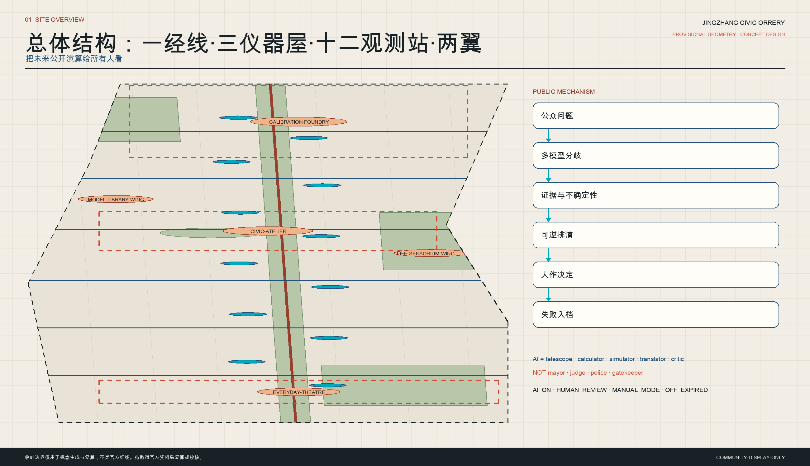
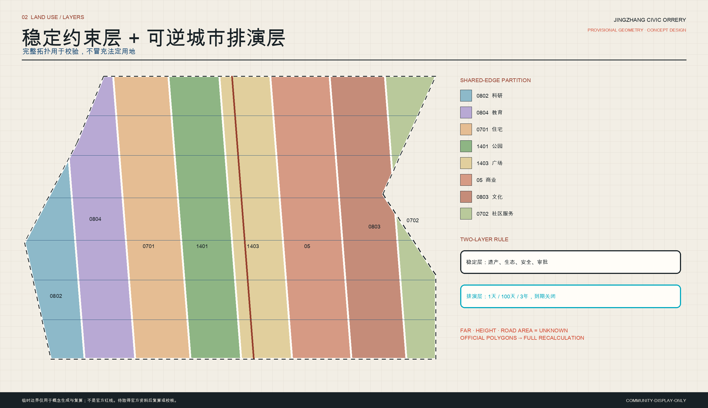
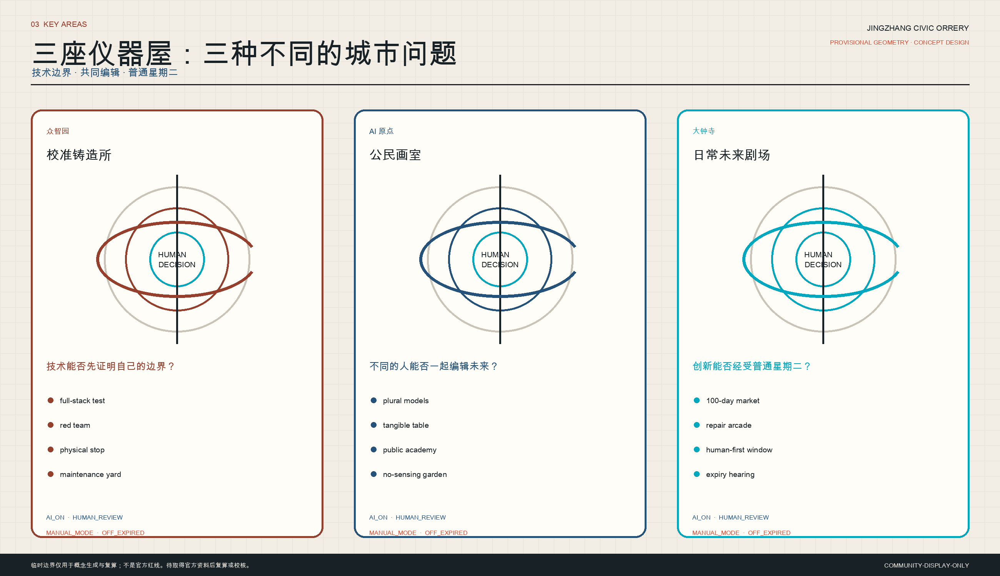
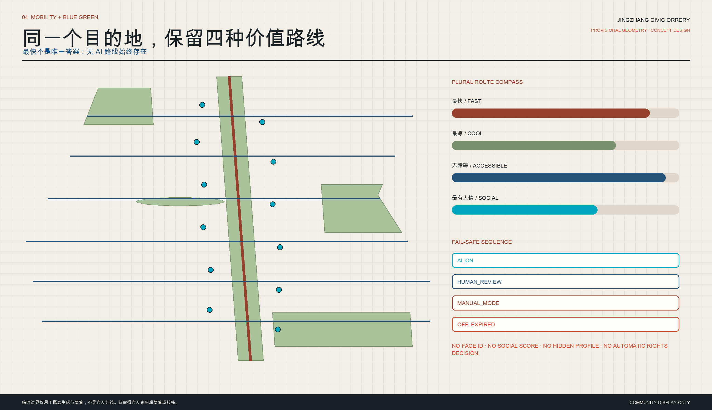
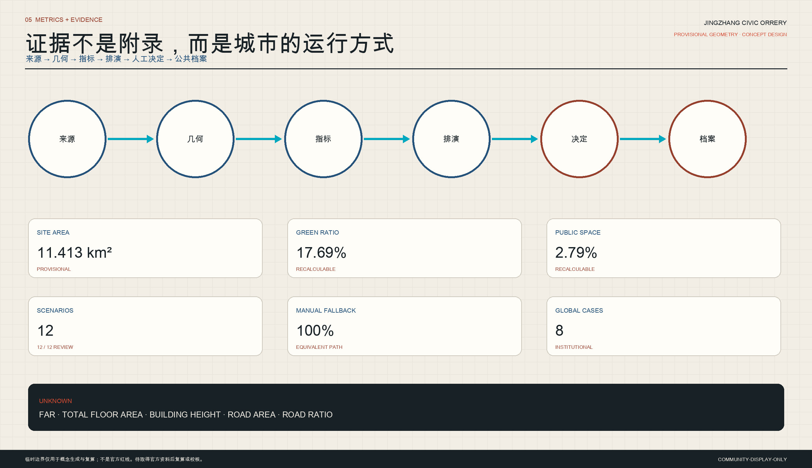

京张万象仪 / JINGZHANG CIVIC ORRERY
把百年京张转化为一套公开比较多种未来、进行可逆城市排演并由人作最终决定的公民基础设施。
京张万象仪 / JINGZHANG CIVIC ORRERY
> 一座把未来公开演算给所有人看的城市 > > **未来，不由机器宣布；由城市共同校准。**
本方案以“公民万象仪”作为百年京张 AI 创新带的城市母题：不是建一座预测未来的机器，而是把整条创新带变成一套可步行、可质疑、可关闭的公共仪器。每个城市问题同时进入多个模型；证据、置信度、成本、受益者和承受者被公开；可逆空间试验让人先用身体体验不同选择；最后由有责任主体的人决定保留、修改或停止。AI 在这里是望远镜、计算器、模拟器、翻译者和批评者，不是市长、法官、警察或不可申诉的门卫。
2126：詹天佑在一个普通星期二醒来
清晨七点，詹天佑从大钟寺旁的一间普通住所出门。街角没有巨屏欢迎他，也没有摄像头要求确认身份。一个机械罗盘同时指向最快、最阴凉、最无障碍和最有人情味的四条路；他选择纸质票据，走入城市经线。孩子们正用日影比较三个气候模型，维修工把昨夜被机器误报的路灯工单挂进“有用的失败长廊”。中午，公开模型议会没有给出“最优答案”，而是展示谁会受益、谁会多走七分钟、哪些证据仍然未知。傍晚，一项服务试验因人工替代路径失效而被当场关闭。人群没有失望，反而在停止记录上签名。詹天佑明白：两百年后的工程荣誉，不是机器永不出错，而是一座城市仍能测量、比较、承认错误，并在不抛下任何人的前提下改变主意。
设计依据与资料清单
本稿回应官方公告的三层工作范围与成果深度，并回应面向 AI agent 的六类任务；专业表达以城市设计、控规深度、国土空间用地分类和建筑设计文件深度要求为校核框架。[source:OFFICIAL-ANNOUNCEMENT] [source:AGENT-TASKBOOK] [standard:PROJECT-OFFICIAL-ANNOUNCEMENT] [standard:PROJECT-AGENT-OPEN-CALL-TASKBOOK] [standard:MOHURD-URBAN-DESIGN-MEASURES] [standard:MOHURD-CONTROL-DETAILED-PLANNING] [standard:MNR-LAND-USE-CLASSIFICATION-GUIDE] [standard:MOHURD-ARCH-DESIGN-DEPTH-2016]
包内事实与机器可读依据来自 site package、来源登记和处理后的事实导航；事实导航只做索引，不升级来源权威性。[source:SITE-PACKAGE] [source:SOURCE-REGISTRY] [source:PROCESSED-FACT-PACK] [source:BOUNDARY-SOURCE] [source:KEY-AREA-SOURCE]
外部案例只提炼机制，不复制图纸、摄影、品牌形象或受版权保护表达：MIT CityScope 的可触摸城市模拟、Toyota Woven City 的真实生活测试、Punggol Digital District 的产业—高校—数字孪生协同、Barcelona Superblocks 的公共空间优先、Kalasatama 的居民共创、Amsterdam Responsible Sensing Lab 的可见感知、Toronto Quayside 对隐私与公共利益的警示、Paris Urban Lab 的限时城市试验。[source:CASE-MIT-CITYSCOPE] [source:CASE-TOYOTA-WOVEN-CITY] [source:CASE-JTC-PUNGGOL] [source:CASE-BCN-SUPERBLOCKS] [source:CASE-FI-KALASATAMA] [source:CASE-AMSTERDAM-RESPONSIBLE-SENSING] [source:CASE-WATERFRONT-TORONTO-QUAYSIDE] [source:CASE-PARIS-URBAN-LAB]
京张历史叙事只依据公共机构材料核对工程史与遗址公园背景，不把文学想象冒充史实。[source:HIST-JINGZHANG-NRA] [source:HIST-JINGZHANG-PARK-BEIJING]
当前 SITE_BOUNDARY 与三处 KEY_AREA 都是仓库维护者提供的 provisional_constraint：不是官方红线、权属线、道路红线或法定用地边界。它们只用于概念生成、拓扑自检、图件表达和面积复算；官方 polygon、控规、测绘、权属、市政、消防、防洪、文保、交通和工程条件取得后，全部图层、指标、图纸与结论都需复算或校核。[data:geometry/site_boundary.geojson#SITE-001] [data:geometry/key_areas.geojson#PROV-KEY-001] [depth:existing_conditions_diagnosis] [depth:risk_missing_data]

未来考古：同一片土地的四次读法
| 时间 | 对京张的读法 | 转译为城市设计的动作 |
|---|---|---|
| 1909 | 中国工程师用测量、标准、施工与复盘改变距离 | 纪念“方法、工人和修正”，不只纪念英雄形象 |
| 2026 | AI 压缩知识工作，同时让城市算法更难被普通人检查和拒绝 | 把证据、假设、争议与关闭权做成公共空间 |
| 2050（推演） | 城市预测能力充裕，共同比较分配影响的能力稀缺 | 建设多模型比较、可逆试验、申诉和手动替代基础设施 |
| 2126（推演） | 最珍贵的 AI 城市不是预知一切，而是能改变主意且不抹去人和记忆 | 建立跨世纪的决策、失败、维修与权利档案 |
十组矛盾构成方案的真实压力：百年遗产与月度 AI 产品周期、全球朝圣目的地与普通生活区、封闭园区与公共学习、算法优化与人的可争辩性、数据丰富与免于监视、南北历史连续与东西城市割裂、发布盛典与长期维修、人才吸引与原居民可负担生活、快速试验与规划安全边界、强空间叙事与官方 polygon 缺失。方案不消除这些矛盾，而是把“如何取舍”公开化。
十二种未来变异因此发生：建筑成为显示气候、维护和不确定性的仪器；稳定规划层之上增加可到期的排演层；南北经线与东西公共房间交织；出行从单一最优变为多种价值路线；消费从无摩擦捕获变为试用—维修—退出；城市成为日常学院；封闭 Demo 变成公共证据室；企业名单变成围绕问题的临时公会；单模型决策变成模型议会；试验默认到期；纪念碑转向方法与有用失败；工程年报转化为双语《京张未来年鉴》。
三个概念按“京张不可替代性、AI 原生性、空间性、公共性、伦理、运营和国际传播”九项各十分评估：A“京张万象仪”87/90；B“人的尺度之城”76/90；C“京张世界画室”77/90。选择 A，因为它同时容纳 B 的权利尺度与 C 的开放原型经济，又避免把普通居民降格为创新观众。
身份系统：一个永远留有缺口的标志
标志由一条竖直经线、三条开放轨道环、两条横向侧翼弧线和三个校准点组成。开放缺口不是未完成，而是人的介入、异议和停止权。单色、24 px、金属铭牌和总图标注都应可识别。视觉使用工程纸 #F2EEE5、北京灰 #C9C3B8、墨色 #182126、铁路锈红 #963F2D、工程蓝 #24527A、警示朱红 #D34A32 和模拟青 #00A8BF；拒绝霓虹赛博朋克、巨屏、装饰机器人、空玻璃盒和以鸟瞰奇观替代公共证据。
三层范围工作框架
统筹研究范围负责“AI 产业与未来城市制度”；总体设计范围负责“空间母结构、更新、交通、市政、蓝绿与公共服务”；三处重点区负责“可被日常使用和监管的原型”。三层不是三套互不相干的图，而是一条证据链：公共问题进入统筹研究，转化为总体结构，在重点区接受 100 天验证，再把结果和失败送回公共档案。[depth:three_level_scope_framework] [depth:overall_spatial_structure]
空间母结构是：**一条公民经线、三座仪器屋、十二个未来观测站、两翼开放观测场。** 经线不是新红线；横向公共房间不是道路工程线位；重点区 polygon 不是地块结论。所有设计层均可在官方资料到达后替换与复算。[data:geometry/roads.geojson#PS-MERIDIAN-001] [data:geometry/public_space.geojson#AI-CALIBRATION-FOUNDRY] [metric:scenario_node_count] [metric:component_count]
七个系统共同工作：时间系统区分史实、现状、提案和推演；空间系统让每个动作可定位；产业系统让原型经过证据再扩张；生活系统保留照护和非数字路径；基础设施系统把每个智能层绑定到手动模式与维修责任；文化系统纪念方法与失败；治理系统保障检查、异议、申诉和关闭。

统筹研究范围产业与未来城市研究
从“企业名单”转向“问题公会”
海淀的优势不是再造一个封闭科技园，而是把高校、科研院所、开发者、创业公司、企业服务、社区、运营方、维修者和国际来访者围绕公共问题临时组织起来。每个“问题公会”先发布公开 brief，再经过多模型模拟、红队、可逆现场试验、公众证据、人工决定和运营转化。方案不虚构企业入驻、资本规模、政策批准或收益；全球案例只支持机制比较，不能证明本地可行性。[metric:global_case_count]
八个全球案例如何在海淀变形
| 案例 | 可转移能力 | 京张万象仪的再设计 |
|---|---|---|
| MIT CityScope | 可触摸模拟和共同比较 | 从实验室工具扩展为沿经线分布的公共制度 |
| Toyota Woven City | 居民与发明者共同实测 | 增加到期、拒绝不受罚、手动模式和公共利益测试 |
| Punggol Digital District | 数字孪生与产学协同 | 用多模型和公开权利替代单一优化 OS |
| Barcelona Superblocks | 公共空间价值优先 | 用树荫、步行、照护和公平评估 AI |
| Smart Kalasatama | 居民—企业—城市 living lab | 把共创变成常设社区服务 |
| Amsterdam Responsible Sensing | 可见传感、快门、登记和最小化 | 标准化“数据授权灯”和无感知路径 |
| Toronto Quayside | 隐私、公共利益和信任是前提 | 把治理和恢复正常模式当成设计本体 |
| Paris Urban Lab | 真实环境中的限时实验 | 固化“100 天试验—保留/修改/停止听证” |
七类人，不是一个“平均用户”
| 人物 | 普通需要 | 必须避免的失败 | 纳入证据 |
|---|---|---|---|
| 原居民老人 | 熟悉服务、树荫、座椅、真人帮助 | 被迫使用手机、人工柜台消失 | 一条完整人工旅程和有人值守的帮助点 |
| 残障通勤者 | 可预测的无障碍路线 | “最优路线”藏着台阶或断点 | 轮椅绕行比与中断证据 |
| 学生与儿童 | 安全好奇、可理解解释 | 只有科技表演没有学习 | 物理解释、纸质材料和监护控制 |
| 研究者与开发者 | 真实问题、可复现实验 | 封闭 Demo 无公共责任 | 测试协议、模型卡、失败日志和评审 |
| 创业者与运营方 | 从原型到服务的有边界路径 | 无限试点、IP 不清、无人接管 | 标准合同、决策日和运营主体 |
| 维修工 | 维修入口、备件和安全手动控制 | 炫目设备无预算、无文档 | 维护台账、模块备件和停机规程 |
| 国际来访者 | 可读故事和真实参与 | 只能靠内部术语理解的文化 | 双语一小时、半日和全日路线 |
人物数量由 [metric:persona_count] 记录。公共价值判断拒绝把租金上涨、低收入者被排除、传统服务消失或数据捕获最大化视作成功。
总体设计范围城市更新与控规深度城市设计
总体设计把“公开比较未来”落实为空间、项目和责任关系，而不是在现状之上叠加一层科技装饰。设计先锁定临时边界和不可伪造的资料缺口，再以完整用地拓扑、概念建筑基底、公民经线、六个横向公共房间、蓝绿系统和三阶段学习门槛组成可校验的母结构。每项空间动作都回答三个问题：普通人如何使用，谁负责维护，失效时如何回到非 AI 服务。临时总体范围复算值只服务包内一致性，不作为官方面积、开发容量或工程条件；容积率、高度、道路面积和市政容量保持 unknown，待官方资料和专业审查后整体替换。总体结构见 [depth:overall_spatial_structure]、[data:geometry/site_boundary.geojson#SITE-001] 与 [metric:site_area_sqm]。
交通、轨道、市政与公共服务设施
一条经线、六个横向公共房间
京张遗址公园被读取为可步行的“公民经线”，串联工程记忆、当代生活与未来试验。六条东西向公共房间提供快、凉、无障碍和社交等并行选择，先以标识、树荫、临时铺装、座椅和全尺度样板验证，不声明道路、桥隧或轨道工程可行性。[data:geometry/roads.geojson#PS-MERIDIAN-001] [data:geometry/roads.geojson#PS-TRANSVERSE-001] [metric:concept_walk_length_m] [depth:traffic_rail_slow_parking]
轨道站点策略是“出口即公共仪器”：把站外第一段步行的方向、无障碍断点、遮阴、夜间帮助和人工服务做得可见。停车、接驳、非机动车和物流只提出分层原则；容量、红线和工程措施待正式交通调查与专业深化。
用地、建筑规模与拆改留方案
完整用地分区，但不是法定用地
land_use.geojson 用八个共享边概念分区完整覆盖临时边界、无缝隙和重叠，采用官方枚举中的科研、教育、住宅、公园、广场、商业、文化和社区服务代码。它表达“稳定约束层—可逆排演层”的空间关系，不表达现状、权属或法定控制。[data:geometry/land_use.geojson#LU-001] [depth:land_use_layout]
概念建筑基底只定位十类公共界面与更新原型；不推算高度、层数、总建筑面积或容积率。建筑形态遵循“低扰动、可拆、可修、可从外部看见停止状态”；沿遗产和绿地界面降低技术存在感，内部用剖面、天光、机械构件和小型显示解释证据。[data:geometry/buildings.geojson#BLDG-001] [metric:building_footprint_area_sqm] [metric:building_density] [metric:floor_area_ratio] [metric:total_floor_area_sqm] [metric:building_height_m] [depth:development_intensity_controls] [depth:height_massing_character]
拆、改、留、新建的决策框架
本稿没有逐栋现状与权属依据，因此不给任何单体下结论。后续专业团队按四道门审查：第一道“遗产、结构与安全价值”；第二道“继续使用和低碳改造能力”；第三道“公共界面与无障碍贡献”；第四道“运营、维修和全寿命成本”。保留优先于改造，改造优先于拆除；新建必须证明不可由既有空间和可逆构件完成。[depth:retain_renovate_demolish]
市政、新基建与公共服务
新基础设施不是一张隐藏网络，而是四层可见责任：端侧计算与数据最小化层、环境与设备感知层、人工值守与申诉层、断网后仍可使用的手动层。分布式能源、雨洪、算力、机器人、消防、环卫和应急均先做负荷、许可、文保和安全评估；本稿不宣称容量。[depth:municipal_new_infrastructure]
每个公共 AI 服务必须同时显示 AI_ON、HUMAN_REVIEW、MANUAL_MODE、OFF_EXPIRED 四种状态；缺数据、断网或未知状态必须显示不可用，不能伪装正常。场景禁止人脸识别、社会评分、隐蔽跨服务画像和自动决定权利。
蓝绿空间、公共空间与城市风貌
蓝绿系统与城市风貌
连续树冠、小月河生命感知湿地、北部模型林、大钟寺日常花园和无感知花园构成蓝绿公共空间。感知设备只针对必要的非个人环境参数，位置和责任人公开；无感知花园不安装传感器、不要求注册、不要求使用 AI。[data:geometry/green_space.geojson#PS-NO-SENSING-GARDEN] [data:geometry/constraints.geojson#CONSTRAINT-NO-SENSING-001] [metric:green_space_area_sqm] [metric:green_ratio] [metric:public_space_area_sqm] [metric:public_space_ratio] [depth:blue_green_public_space]
风貌不是“铁路元素贴皮”，而是继承工程的方法：尺寸可读、节点可拆、材料可修、状态可见、错误可记录。历史对象和公园日常功能始终是第一层；新装置服从遗产、生态、无障碍与安全审查。
更新项目清单、实施政策与分期计划
更新项目清单
| 项目 | 首期动作 | 进入长期运营的门槛 |
|---|---|---|
| 公民经线 | 导视、树荫与可逆证据牌 | 连续无障碍走查、遗产与公园审批 |
| 六个横向公共房间 | 一处全尺度临时样板 | 交通安全、排水、市政和社区评审 |
| 三座仪器屋 | 利用适宜既有空间做轻量项目 | 场地、结构、消防、运营主体明确 |
| 十二观测站 | 先启用三处人工主导观测 | 每站有人工替代、到期和维护预算 |
| 无感知花园 | 划定清晰边界与静态导视 | 与任何数字服务具有同等可达性 |
| 有用失败档案 | 发布模板与第一批停止记录 | 独立证据管理员和年度复审 |
项目清单对应 [depth:renewal_project_list]，并以 phase_1/2/3 概念分区表达学习顺序而非政府建设计划。[data:geometry/phasing.geojson#PHASE-001]
重点区域详细设计
三处重点区是三种完全不同的城市仪器，不是三个同质化“AI 园区”。其代理范围分别为 [data:geometry/key_areas.geojson#PROV-KEY-001]、[data:geometry/key_areas.geojson#PROV-KEY-002]、[data:geometry/key_areas.geojson#PROV-KEY-003]；精确边界和面积必须在官方资料到达后复算。[depth:three_key_area_detailed_design]
众智园：校准铸造所 / Calibration Foundry
定位是全栈 AI、具身系统、安全测试、模型红队和治理证据。空间由耐用工坊、围护试验庭、证据廊、公开模型议会和维修者院组成。公众可以看到测试条件、物理停止、失败次数和人工接管，但不进入受限实验室。进入日常城市的前置问题是：“技术能否先证明自己的边界？”T01 具身 AI 试验在此发生；任何物理停止失效、无安全员或事件记录不完整都立即终止。[data:geometry/public_space.geojson#AI-CALIBRATION-FOUNDRY]
北京 AI 原点社区：公民画室 / Civic Atelier
定位是科研、创业、开发者社区、公共学习和公民模型比较。空间由开放工作室、可触摸模拟台、阶梯议事场、遮阴学习庭和无感知花园组成。居民带来问题，开发者把问题翻译成多个互相冲突的原型；没有居民可理解的解释，不进入现场试验。核心问题是：“不同的人能否一起看懂并编辑未来？”T02 多模型城市决策沙盒在此发生。[data:geometry/public_space.geojson#AI-CIVIC-ATELIER]
大钟寺：日常未来剧场 / Theatre of Everyday Futures
定位是 AI 原生消费、商业、文化、照护、服务和夜间生活。空间由 100 天市集、维修廊、人工优先窗口、可调整店铺和夜间公共客厅组成。服务用普通星期二而非发布会检验：能否维修、是否公平、能否退出、断网后能否继续。T03 AI 原生服务市集在此发生；任何基本服务拒绝、隐蔽跨服务画像或缺少退出路径都立即停止。[data:geometry/public_space.geojson#AI-EVERYDAY-THEATRE]
两翼分别是中关村“世界模型图书馆”和小月河“城市感官花园”。前者把人才、研究、企业服务、标准与国际网络组织为可查证模型，不承诺资金或企业；后者用水、土、热、声、生态和维护让城市条件可感知，默认非生物识别、可见、最小化、到期并保留无感知路径。[data:geometry/public_space.geojson#AI-MODEL-LIBRARY-WING] [data:geometry/public_space.geojson#AI-LIFE-SENSORIUM-WING]

AI 创新生态、人才画像与 AI+ 场景
十二张完整 AI 城市场景卡
每张卡均包含十三项：核心用户、地点、普通一天、AI 角色、空间变化、合法数据、人工/隐私/退出、运营/维护、近期试点、公共价值、风险、停止条件、图纸。任何字段缺失，场景不得进入试验。十二节点落位见 [metric:scenario_node_count]，人工复核和非数字替代覆盖见 [metric:human_review_coverage_ratio]、[metric:non_digital_fallback_coverage_ratio]。
场景卡 S01｜三选一通勤罗盘
- 核心用户：通勤者、学生、访客、残障出行者；地点：站点与社区门厅。
- 普通一天：用机械盘、纸条或可选界面比较最快、最凉、最无障碍、最具社交性的路线。
- AI 角色：合成获准交通、天气、志愿障碍报告与匿名路况，给出多项可解释选项。
- 空间变化：遮阴决策廊、触觉地图、休息边和可见评价标准。
- 合法数据：获许可的公共交通与天气、志愿报告、聚合非识别计数。
- 人工/隐私/退出：不需身份；真人帮助、静态图和完全忽略建议的权利常在。
- 运营/维护：出行运营方与场地管理员每日人工核验无障碍；近期试点：一组起终点。
- 公共价值：路线连续、遮阴暴露、绕行比、错报率；风险：旧数据、假无障碍、选择过载。
- 停止条件：推荐产生未标记危险或人工核验连续缺席；图纸：门廊平面、触觉剖面、四路线比较。
场景卡 S02｜树荫与热舒适分红
- 核心用户：儿童、老人、户外劳动者、行人；地点：公园、河岸、广场和等候区。
- 普通一天：看见下一小时树荫和休息点，选择更凉的路。
- AI 角色：结合官方天气、非个人环境传感、树影模型和人工维护状态预测热风险。
- 空间变化：可移动遮阴、饮水提示、凉椅和季节种植。
- 合法数据：官方天气、公开登记环境传感、设计几何和人工树荫走查。
- 人工/隐私/退出：无摄像与个人画像；季节静态图常在。
- 运营/维护：园林与设施方公开清洁和用水安全；近期试点：短公园段人工测温。
- 公共价值：舒适分钟、阴凉座位、热投诉趋势；风险：漂移、耗水、伪精确。
- 停止条件：用水或热安全不合格；图纸：夏冬日影剖面与舒适时间线。
场景卡 S03｜无脸夜行
- 核心用户：夜班者、女性、学生、老人、访客；地点：夜间步行连接。
- 普通一天：选择有人值守、照明好或社会活动更丰富的路线，并可不用身份请求真人帮助。
- AI 角色：用隐私保护方法发现照明故障与聚合活动变化，优先派修和人员服务。
- 空间变化：可见帮助点、视线修复、暖光、活动界面和不录像物理按钮。
- 合法数据：照明状态、工单、非生物识别聚合计数和志愿报告。
- 人工/隐私/退出：无人脸、无身份评分；物理按钮和人员常在。
- 运营/维护：公共空间运营与安全员；近期试点：一条人工夜间走查路线。
- 公共价值：修灯时间、响应时间、有限度的感受调查；风险：安全表演、监控蔓延、路线污名。
- 停止条件：出现未披露识别或帮助点无人响应；图纸：夜景剖面、视线与升级流程。
场景卡 S04｜无障碍城市排演
- 核心用户：轮椅、盲低视力、推婴儿车和临时受伤者；地点：东西连接与重点区入口。
- 普通一天：在布局固化前走过全尺度临时样板，当场指出障碍。
- AI 角色：比较几何、志愿反馈和多个临时布局，翻译为不同方案。
- 空间变化：胶带/临时缘石、触觉样件、转弯半径和休息间距。
- 合法数据：公开标准、临时几何和同意后的工作坊反馈。
- 人工/隐私/退出：自愿、匿名、纸质反馈；专业无障碍评审控制决定。
- 运营/维护：试验组织者、无障碍评审和场地管理员；近期试点：安全场地一处横向房间。
- 公共价值：障碍解决数、轮椅绕行比、独立完成率；风险：象征参与、不安全样板、小样本外推。
- 停止条件：专业评审缺席或出现伤害风险；图纸：全尺度平面和路线剖面。
场景卡 S05｜城市维修诊所
- 核心用户：居民、维修工、机器人团队、设施运营；地点：校准铸造所和流动社区场次。
- 普通一天：带来坏掉的公共构件，由维修者用可选 AI 诊断并教学修复。
- AI 角色：检索手册、给出故障树、兼容部件和不确定性，合格人员批准操作。
- 空间变化：可见维修台、安全机器人间、备件库和维护账本。
- 合法数据：设备手册与清权维修记录，不含无关个人信息。
- 人工/隐私/退出：手工诊断常在；机器人有物理停机、围护模式和安全员。
- 运营/维护：设施方与具名维护公会；近期试点：非安全关键家具与传感器。
- 公共价值：周转时间、再用率、停机避免和复发率；风险：危险建议、供应商锁定、缺件。
- 停止条件：安全员、围护或物理停止任一失效；图纸：维修剖面、安全区和流程。
场景卡 S06｜一日城市学院
- 核心用户：儿童、教师、老人、访客、开发者；地点：公民画室和观测站。
- 普通一天：跟随一个城市问题经历证据、模型分歧、物理排演、辩论和人工决定。
- AI 角色：分龄解释、翻译并用反例揭示假设。
- 空间变化：户外绘图桌、机械模型、聆听椅和无屏材料。
- 合法数据：获准公共证据和原创教育材料。
- 人工/隐私/退出：不做学习者画像；教师模式、纸质包和监护控制。
- 运营/维护：教育伙伴与公共项目管理员；近期试点：60 分钟树荫或维修路线。
- 公共价值：参与前后识别来源、不确定性和申诉路径的能力；风险：过度简化、隐性劝服、屏幕依赖。
- 停止条件：内容无法标明事实、提案与推演；图纸：学习旅程和分龄互动。
场景卡 S07｜人工优先窗口
- 核心用户：老人、低数字素养者、访客、拒绝 AI 者；地点：大钟寺和公共节点。
- 普通一天：用真人、纸张或直接物理交互获得同等基本服务。
- AI 角色：仅作员工翻译和检索助手，不拒绝资格、不最终决定权利。
- 空间变化：醒目人工柜台、座椅、声学私密和 AI 开关标识。
- 合法数据：仅限完成服务所必需的信息。
- 人工/隐私/退出：同等非 AI 路径、人工复核、纠正和申诉。
- 运营/维护：服务商审计服务等价；近期试点：信息与导航窗口。
- 公共价值：完成率等价、等待时间、纠错率、拒绝 AI 不受罚率；风险：二等人工服务、排队污名、员工去技能化。
- 停止条件：非 AI 路径完成率显著劣化；图纸：双路径剖面和等价清单。
场景卡 S08｜一百种明天市集
- 核心用户：居民、服务创业者、店主、访客、监管者；地点：大钟寺可调整店铺。
- 普通一天：试用带证据牌和到期日的 AI 服务，使用人工替代并留下数字或纸质反馈。
- AI 角色：在声明模型卡内提供专项服务，不建立隐形跨服务画像。
- 空间变化：模块店铺、证据牌、数据快门、维修柜和试验结论板。
- 合法数据：目的限定的服务数据、志愿反馈和早期合成数据。
- 人工/隐私/退出：颗粒化同意、有限手动模式、账户与数据删除路径可见。
- 运营/维护：临时运营者、市集管理员、安全评审和结论责任人；近期试点：三项非关键服务 100 天。
- 公共价值：自愿复用、人工替代使用、可修性、投诉与保留/修改/停止决定；风险：新奇偏差、公共空间商业化、IP 不清。
- 停止条件：基本服务拒绝、隐形画像、 unresolved safety 或无退出；图纸：店铺套件、100 天线和证据牌。
场景卡 S09｜公开模型议会
- 核心用户：居民、规划师、研究者、受影响运营者、学生；地点：众智园与公民画室卫星点。
- 普通一天：多个模型回答同一问题，参与者查看来源、不确定性、赢家、承受者和不行动基线。
- AI 角色：生成并互相批评替代方案，发现无证据主张，翻译技术取舍。
- 空间变化：圆形议场、可触摸情景桌、来源墙、异议席和物理停止杆。
- 合法数据：公开或清权来源、临时几何和必要的合成示例。
- 人工/隐私/退出：不自动作政策决定；匿名问题与无模型基线强制存在。
- 运营/维护：独立主持、证据管理员、技术团队和专业责任人；近期试点：比较三种树荫分配。
- 公共价值：来源可追溯、替代多样性、未答问题与可逆性；风险：摆拍参与、模型单一、视觉诱导。
- 停止条件：自动权利决定、隐藏证据、捏造确定性或不可复现；图纸：议场、证据流和分歧协议。
场景卡 S10｜小月河生态观测花园
- 核心用户：居民、儿童、生态人员、步行者、维修队；地点：经专业审查的适宜滨水空间。
- 普通一天：通过物理标记和可选小界面感知水、土、热、生物多样性与维护。
- AI 角色：从公开环境时间序列发现异常并建议人工巡检，不代替生态结论。
- 空间变化：水尺、物候环、聆听台、季节树荫和无感知避静处。
- 合法数据：清权环境传感、人工观察、公共天气和获许可生态记录。
- 人工/隐私/退出：无身份、无谈话录音；传感器登记并醒目标记。
- 运营/维护：生态管理员与公园维护队；近期试点：人工记录加一项非个人传感。
- 公共价值：巡检响应、传感在线、公众学习和带方法限制的观察；风险：生态扰动、误报、装饰化。
- 停止条件：对栖息地造成扰动或传感器未登记；图纸：河岸剖面、传感可见性和安静区。
场景卡 S11｜维护预见工单
- 核心用户：维修班组、场地运营、报障居民；地点：家具、照明、无障碍、水与景观设施。
- 普通一天：运营者收到可能故障排序，工人现场验证、记录真实状况并可驳回建议。
- AI 角色：按设备历史与环境排序巡检，公开置信度和理由码。
- 空间变化：维修入口、标记构件、人可读资产牌和安全手控。
- 合法数据：清权设备与工单记录，不做工人绩效评分。
- 人工/隐私/退出：工人可无惩罚 override；居民保留电话和现场报修。
- 运营/维护：资产所有者和维护承包方；近期试点：非安全关键灯具或座椅。
- 公共价值：平均修复、误报、复发、无障碍设施停机；风险：工人监视、自动化偏见、忽略无传感资产。
- 停止条件：系统被用于员工排名或安全工单被自动关闭；图纸：资产寿命与 override 流程。
场景卡 S12｜数据授权灯
- 核心用户：所有进入感知或 AI 辅助空间的人；地点：试验入口、传感杆、柜台和市集模块。
- 普通一天：看见系统是否开启、感知什么、谁负责、何时到期、如何反对和无感知路径。
- AI 角色：授权灯本身不需 AI，它是 AI 周围的责任界面。
- 空间变化：标准色状态、物理快门、白话铭牌、到期盘和无障碍替代路。
- 合法数据：公开登记元数据与运营声明。
- 人工/隐私/退出：可见关闭、安全时可物理断开、投诉渠道和无同意路径。
- 运营/维护：系统所有者与独立登记员；失效必须显式显示关闭。
- 近期试点：覆盖每个项目传感器，并展示一台不存个人图像的快门样机。
- 公共价值：登记完整、按时到期、异议响应和替代路径；风险：误导绿灯、不可读告示、象征同意。
- 停止条件：状态与真实采集不一致；图纸：四状态、快门详图和入口选择。

三个受规制试验
| 编号 | 试验顺序 | 强制控制 | 立即停止条件 |
|---|---|---|---|
| T01 具身 AI 共享空间 | 模拟→围护工坊→有人监管低速接触→限时公众试验 | 安全员、物理停止、速度/地理围栏、事件日志、手动恢复、无人脸 | 未受控安全事件、无安全员、停止失效或记录不全 |
| T02 多模型城市决策 | 合成问题→公共来源问题→可逆实体排演 | 至少三方案加不行动基线、来源、不确定性、受影响群体、人工主持 | 自动权利决定、隐藏证据、伪造确定或不可复现 |
| T03 AI 原生服务市集 | 封闭原型→受邀用户→100 天公开试验→听证 | 运营者、标准合同、合法目的、手动替代、维修、到期删除 | 基本服务拒绝、跨服务画像、安全未决或无退出 |
试验数量由 [metric:test_validation_scenario_count] 记录。所有试验都遵守“默认不扩张、默认到期、失败可见、人的决定优先”。
四座朝圣地标、十个公共构件与三条路线
1. **万象穹**：用环、日光、阴影、水、配重和剖面模型同时呈现同一问题的多种未来；不是屏幕穹顶。 2. **公开模型议会**：中央留空，表示没有模型拥有城市；异议席与停止杆是空间主角。 3. **一百种明天市集**：模块服务都有开场与谢幕，到期听证与发布同样可见。 4. **有用的失败长廊**：署名工程师、工人、维修者、居民和被负责任停止的试验，不使用未授权肖像与商标。
地标数量由 [metric:pilgrimage_landmark_count] 记录。十个基础构件是证据牌、数据授权灯、物理快门、人工复核铃、手动路线标、到期盘、异议席、维护账本牌、可逆试验框和无感知长椅；每件均有非电子读法与可换零件。
一小时路线在 AI 原点社区完成“万象穹—一次模型比较—无感知花园—人工优先窗口”；半日路线完成“众智园校准铸造所—公开模型议会—经线观测站—公民画室”；全日路线完成“众智园—AI 原点—小月河生态观测—大钟寺 100 天市集—有用失败夜行”。路线是体验框架，不是已核实的连续无障碍工程线位。
公开模型议会：治理不是附录
城市问题的固定流程是：**公众问题 → 至少三个相互冲突的模型与不行动基线 → 来源、不确定性、成本和分配影响公开 → 可逆空间排演 → 居民体验与挑战 → 有责任的人保留/修改/停止 → 有用失败进入公共档案。** 冲突不被平均掉，低置信度不触发自动动作。
每个场景的公共记录包含目的、运营和维修责任、允许/禁止数据、模型版本、置信度和限制、人工复核人、申诉、手动替代、开始/复审/到期日、停止条件、结论和事故。数据原则是必要、比例、默认非生物识别、尽量本地或聚合处理、目的分离、最短保留、可见登记、同等非 AI 服务、人工纠正与关闭。[data:geometry/constraints.geojson#CONSTRAINT-NO-SENSING-001]
缺数据就显示不可用并用静态或人工核验方案；模型冲突就保留分歧；低置信度进入 HUMAN_REVIEW；传感或网络故障进入 MANUAL_MODE；安全事件立即停机；到期进入 OFF_EXPIRED，不得静默续期；合法范围内的低风险辅助才可显示 AI_ON。
年度活动、运营闭环与分期
年度系统包括“可能城市节”“公开模型议会周”“100 天原型季”“维修之夜”和双语《京张未来年鉴》。它们是活动建议，不是已确认政府安排。长期闭环为：居民/运营者问题→公开 brief→问题公会→模拟与红队→可逆试验→公众证据与人工决定→采购/许可或负责任退出→运营维护→国际案例交换→新问题。收入、合同、IP、采购和赞助仅列为待法律、财务和政府审查的选项。[depth:phasing_implementation]
- 2026—2028：非结构可逆仪器、首个公民画室、授权灯标准、第一次模型议会、T01—T03、一小时路线、维护与失败账本。
- 2029—2035：三座仪器屋适配合适空间，展开十二站和两翼，形成活动与服务转运营合同。
- 2036—2050：形成公共证据与城市试验互操作标准、可输出构件库和国际公民观测站网络。
- 2126：只是跨世纪公共修正的叙事地平线，不是工期、投资或政府承诺。
三阶段临时几何复算值为 [metric:phase_1_area_sqm]、[metric:phase_2_area_sqm]、[metric:phase_3_area_sqm]；推进门槛不是“时间到了”，而是公众审计、无障碍、安全、维护、失败复盘与人工授权全部通过。
指标体系、面积复算与合规矩阵
所有已知空间指标由同一套 GeoJSON 在 EPSG:4548 中复算；官方公告面积与临时 polygon 复算值分开。未知项明确写 unknown，不以设计愿望填空。[depth:metrics_recalculation]
| 指标 | 包内值 | 解释边界 |
|---|---|---|
| [metric:site_area_sqm] | 11,412,825.386 sqm | 临时总体边界复算值 |
| [metric:key_area_count] | 3 | 三个临时重点区代理 |
| [metric:zhongzhiyuan_ai_acceleration_area_proxy_area_sqm] | 1,929,201.877 sqm | 众智园代理，不是官方精确面积 |
| [metric:beijing_ai_origin_community_proxy_area_sqm] | 1,043,236.909 sqm | AI 原点代理 |
| [metric:dazhongsi_ai_industry_cluster_proxy_area_sqm] | 720,454.219 sqm | 大钟寺代理 |
| [metric:building_footprint_area_sqm] / [metric:building_density] | 175,248.233 sqm / 0.015355 | 仅十个概念建筑基底 |
| [metric:green_space_area_sqm] / [metric:green_ratio] | 2,018,512.008 sqm / 0.176863 | 设计绿地 union / 临时边界 |
| [metric:public_space_area_sqm] / [metric:public_space_ratio] | 317,843.952 sqm / 0.027850 | 仪器节点 union / 临时边界 |
| [metric:concept_walk_length_m] | 16,785.338 m | 经线加六条横向概念路线 |
| [metric:global_case_count] / [metric:persona_count] | 8 / 7 | 案例与人物覆盖 |
| [metric:scenario_node_count] / [metric:test_validation_scenario_count] | 12 / 3 | 完整场景与受规制试验 |
| [metric:pilgrimage_landmark_count] / [metric:component_count] | 4 / 26 | 地标与空间系统构件计数 |
| [metric:human_review_coverage_ratio] | 1.0 | 12/12 场景要求人工复核 |
| [metric:non_digital_fallback_coverage_ratio] | 1.0 | 12/12 场景有非数字替代 |
概念用地面积分别为商业 [metric:land_use_05_area_sqm]、住宅 [metric:land_use_0701_area_sqm]、社区服务 [metric:land_use_0702_area_sqm]、科研 [metric:land_use_0802_area_sqm]、文化 [metric:land_use_0803_area_sqm]、教育 [metric:land_use_0804_area_sqm]、公园 [metric:land_use_1401_area_sqm] 和广场 [metric:land_use_1403_area_sqm]。这些数值证明拓扑可复算，不构成法定用地建议。
容积率 [metric:floor_area_ratio]、总建筑面积 [metric:total_floor_area_sqm]、建筑高度 [metric:building_height_m]、道路面积 [metric:road_area_sqm] 与道路占比 [metric:road_area_ratio] 均为 unknown，原因是缺少官方边界、审定控规、逐栋层数和道路红线。未知不是缺陷被掩盖，而是禁止伪精确的专业结论。

compliance_matrix.json 逐条定位公告 1.3—1.5 与 agent.1—agent.6；standard_matrix.json 定位六项主控依据；design_depth_matrix.json 定位十五项专业深度。每项都回接正文标题、图纸、GeoJSON、指标、来源、假设和自检，不把文案长度当作完成度。
风险、版权与合规说明
[depth:risk_missing_data]
1. **边界风险**：总体边界和重点区都是 provisional；官方资料到达后全量复算，而非只换底图。 2. **规划与工程风险**：不宣称 FAR、高度、拆改留、道路、市政、消防、防洪、文保或投资可行性；由相应专业团队深化。 3. **治理风险**：任何默认人脸、社会评分、跨服务画像、自动权利决定、无人工等价服务或无到期的方案不进入试验。 4. **运营风险**：没有具名责任、维护预算、备件、事件记录和结束决定的 Demo 不开放。 5. **公平风险**：租金上涨、原居民排除、传统服务消失和数据捕获增加不计为公共价值。 6. **表达风险**：1909 为历史，2026 为当前设计语境，2050/2126 为推演；不得混写成预测或政府承诺。 7. **版权**：文字、图形、标志、GeoJSON 设计层和图件为本投稿原创生成；外部案例仅作经转述的机制研究，不复制图纸、摄影、商标、人物或科幻作品表达。科幻只提出制度问题，例如单一预测成为命运、预测替代权利判断、时空分层与跨代责任，不作为事实证据。
本项目是开源共创城市设计提案，不是法定规划、审批文件、政府采购、招商承诺、施工图或法律意见。中文文本控制解释；英文文本按章节、主张、数字、证据标签与图件位置对齐。公开展示许可及归属见 report/copyright_statement.md。
最终判断只有一句：**未来，不由机器宣布；由城市共同校准。**
参考资料
完整来源登记见 sources.json；专业标准、任务覆盖和设计深度证据分别见 standard_matrix.json、compliance_matrix.json 与 design_depth_matrix.json。所有在线来源均记录发布者、标题、URL、检索日期、用途、转译方式与使用限制。[source:SITE-PACKAGE] [source:SOURCE-REGISTRY]
来源被分成三类使用：官方公告和面向智能体任务书界定任务，不代替地块控制；仓库 site package、source registry、fact pack 和临时 geometry 支撑可复算包，但不升级为官方红线；八个国际案例与两项京张历史来源只用于比较机制和核对背景，不证明本地工程、法律或运营可行。正文、图件和 PDF 不嵌入第三方摄影、受保护图纸或商标。若来源更新、链接失效或官方 polygon 发布，须先更新来源状态与假设，再重算 GeoJSON、指标、矩阵、图件、HTML 和 PDF，不能只改叙述。